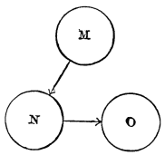

Chapter 18: Memory¶
18.1 Memory¶
Analysis of the Phenomenon of Memory.—Memory proper, or secondary memory as it might be styled, is the knowledge of a former state of mind after it has already once dropped from consciousness; or rather it is the knowledge of an event, or fact, of which meantime we have not been thinking, with the additional consciousness that we have thought or experienced it before.
The first element which such a knowledge involves would seem to be the revival in the mind of an image or copy of the original event. And it is an assumption made by many writers that such revival of an image is all that is needed to constitute the memory of the original occurrence. But such a revival is obviously not a memory, whatever else it may be; it is simply a duplicate, a second event, having absolutely no connection with the first event except that it happens to resemble it. The clock strikes to-day; it struck yesterday; and may strike a million times ere it wears out. The rain pours through the gutter this week; it did so last week; and will do so in sæcula sæculorum. But does the present clock-stroke become aware of the past ones, or the present stream recollect the past stream, because they repeat and resemble them? Assuredly not. And let it not be said that this is because clock-strokes and gutters are physical and not psychical objects; for psychical objects (sensations, for example) simply recurring in successive editions will remember each other on that account no more than clock-strokes do. No memory is involved in the mere fact of recurrence. The successive editions of a feeling are so many independent events, each snug in its own skin. Yesterday's feeling is dead and buried; and the presence of to-day's is no reason why it should resuscitate along with to-day's. A farther condition is required before the present image can be held to stand for a past original.
That condition is that the fact imaged be expressly referred to the past, thought as in the past. But how can we think a thing as in the past, except by thinking of the past together with the thing, and of the relation of the two? And how can we think of the past? In the chapter on Time-perception we have seen that our intuitive or immediate consciousness of pastness hardly carries us more than a few seconds backward of the present instant of time. Remoter dates are conceived, not perceived; known symbolically by names, such as 'last week,' '1850'; or thought of by events which happened in them, as the year in which we attended such a school, or met with such a loss. So that if we wish to think of a particular past epoch, we must think of a name or other symbol, or else of certain concrete events, associated therewithal. Both must be thought of, to think the past epoch adequately. And to 'refer' any special fact to the past epoch is to think that fact with the names and events which characterize its date, to think it, in short, with a lot of contiguous associates.
But even this would not be memory. Memory requires more than mere dating of a fact in the past. It must be dated in my past. In other words, I must think that I directly experienced its occurrence. It must have that 'warmth and intimacy' which were so often spoken of in the chapter on the Self, as characterizing all experiences 'appropriated' by the thinker as his own.
A general feeling of the past direction in time, then, a particular date conceived as lying along that direction, and defined by its name or phenomenal contents, an event imagined as located therein, and owned as part of my experience,—such are the elements of every object of memory.
Retention and Recall.—Such being the phenomenon of memory, or the analysis of its object, can we see how it comes to pass? can we lay bare its causes?
Its complete exercise presupposes two things:
1) The retention of the remembered fact; and
2) Its reminiscence, recollection, reproduction, or recall.
Now the cause both of retention and of recollection is the law of habit in the nervous system, working as it does in the 'association of ideas.'
Association explains Recall.—Associationists have long explained recollection by association. James Mill gives an account of it which I am unable to improve upon, unless it might be by translating his word 'idea' into 'thing thought of,' or 'object.'
"There is," he says, "a state of mind familiar to all men, in which we are said to remember. In this state it is certain we have not in the mind the idea which we are trying to have in it. How is it, then, that we proceed, in the course of our endeavor, to procure its introduction into the mind? If we have not the idea itself, we have certain ideas connected with it. We run over those ideas, one after another, in hopes that some one of them will suggest the idea we are in quest of; and if any one of them does, it is always one so connected with it as to call it up in the way of association. I meet an old acquaintance, whose name I do not remember, and wish to recollect. I run over a number of names, in hopes that some of them may be associated with the idea of the individual. I think of all the circumstances in which I have seen him engaged; the time when I knew him, the persons along with whom I knew him, the things he did, or the things he suffered; and if I chance upon any idea with which the name is associated, then immediately I have the recollection; if not, my pursuit of it is vain. There is another set of cases, very familiar, but affording very important evidence on the subject. It frequently happens that there are matters which we desire not to forget. What is the contrivance to which we have recourse for preserving the memory—that is, for making sure that it will be called into existence when it is our wish that it should? All men invariably employ the same expedient. They endeavor to form an association between the idea of the thing to be remembered and some sensation, or some idea, which they know beforehand will occur at or near the time when they wish the remembrance to be in their minds. If this association is formed and the association or idea with which it has been formed occurs, the sensation, or idea, calls up the remembrance, and the object of him who formed the association is attained. To use a vulgar instance: a man receives a commission from his friend, and, that he may not forget it, ties a knot in his handkerchief. How is this fact to be explained? First of all, the idea of the commission is associated with the making of the knot. Next, the handkerchief is a thing which it is known beforehand will be frequently seen, and of course at no great distance of time from the occasion on which the memory is desired. The handkerchief being seen, the knot is seen, and this sensation recalls the idea of the commission, between which and itself the association had been purposely formed."
In short, we make search in our memory for a forgotten idea, just as we rummage our house for a lost object. In both cases we visit what seems to us the probable neighborhood of that which we miss. We turn over the things under which, or within which, or alongside of which, it may possibly be; and if it lies near them, it soon comes to view. But these matters, in the case of a mental object sought, are nothing but its associates. The machinery of recall is thus the same as the machinery of association, and the machinery of association, as we know, is nothing but the elementary law of habit in the nerve-centres.
It also explains retention. And this same law of habit is the machinery of retention also. Retention means liability to recall, and it means nothing more than such liability. The only proof of there being retention is that recall actually takes place. The retention of an experience is, in short, but another name for the possibility of thinking it again, or the tendency to think it again, with its past surroundings. Whatever accidental cue may turn this tendency into an actuality, the permanent ground of the tendency itself lies in the organized neural paths by which the cue calls up the memorable experience, the past associates, the sense that the self was there, the belief that it all really happened, etc., as previously described. When the recollection is of the 'ready' sort, the resuscitation takes place the instant the cue arises; when it is slow, resuscitation comes after delay. But be the recall prompt or slow, the condition which makes it possible at all (or, in other words, the 'retention' of the experience) is neither more nor less than the brain-paths which associate the experience with the occasion and cue of the recall. When slumbering, these paths are the condition of retention; when active, they are the condition of recall.

Brain-scheme.—A simple scheme will now make the whole cause of memory plain. Let n be a past event, o its 'setting' (concomitants, date, self present, warmth and intimacy, etc., etc., as already set forth), and m some present thought or fact which may appropriately become the occasion of its recall. Let the nerve-centres, active in the thought of m, n, and o, be represented by M, N, and O, respectively; then the existence of the paths symbolized by the lines between M and N and N and O will be the fact indicated by the phrase 'retention of the event n in the memory,' and the excitement of the brain along these paths will be the condition of the event n's actual recall. The retention of n, it will be observed, is no mysterious storing up of an 'idea' in an unconscious state. It is not a fact of the mental order at all. It is a purely physical phenomenon, a morphological feature, the presence of these 'paths,' namely, in the finest recesses of the brain's tissue. The recall or recollection, on the other hand, is a psycho-physical phenomenon, with both a bodily and a mental side. The bodily side is the excitement of the paths in question; the mental side is the conscious representation of the past occurrence, and the belief that we experienced it before.
The only hypothesis, in short, to which the facts of inward experience give countenance is that the brain-tracts excited by the event proper, and those excited in its recall, are in part DIFFERENT from each other. If we could revive the past event without any associates we should exclude the possibility of memory, and simply dream that we were undergoing the experience as if for the first time. Wherever, in fact, the recalled event does appear without a definite setting, it is hard to distinguish it from a mere creation of fancy. But in proportion as its image lingers and recalls associates which gradually become more definite, it grows more and more distinctly into a remembered thing. For example, I enter a friend's room and see on the wall a painting. At first I have the strange, wondering consciousness, 'Surely I have seen that before,' but when or how does not become clear. There only clings to the picture a sort of penumbra of familiarity,—when suddenly I exclaim: "I have it! It is a copy of part of one of the Fra Angelicos in the Florentine Academy—I recollect it there." Only when the image of the Academy arises does the picture become remembered, as well as seen.
The Conditions of Goodness in Memory.—The remembered fact being n, then, the path N—O is what arouses for n its setting when it is recalled, and makes it other than a mere imagination. The path M—N, on the other hand, gives the cue or occasion of its being recalled at all. Memory being thus altogether conditioned on brain-paths, its excellence in a given individual will depend partly on the NUMBER and partly on the PERSISTENCE of these paths.
The persistence or permanence of the paths is a physiological property of the brain-tissue of the individual, whilst their number is altogether due to the facts of his mental experience. Let the quality of permanence in the paths be called the native tenacity, or physiological retentiveness. This tenacity differs enormously from infancy to old age, and from one person to another. Some minds are like wax under a seal—no impression, however disconnected with others, is wiped out. Others, like a jelly, vibrate to every touch, but under usual conditions retain no permanent mark. These latter minds, before they can recollect a fact, must weave it into their permanent stores of knowledge. They have no desultory memory. Those persons, on the contrary who retain names, dates and addresses, anecdotes, gossip, poetry, quotations, and all sorts of miscellaneous facts, without an effort, have desultory memory in a high degree, and certainly owe it to the unusual tenacity of their brain-substance for any path once formed therein. No one probably was ever effective on a voluminous scale without a high degree of this physiological retentiveness. In the practical as in the theoretic life, the man whose acquisitions stick is the man who is always achieving and advancing, whilst his neighbors, spending most of their time in relearning what they once knew but have forgotten, simply hold their own. A Charlemagne, a Luther, a Leibnitz, a Walter Scott, any example, in short, of your quarto or folio editions of mankind, must needs have amazing retentiveness of the purely physiological sort. Men without this retentiveness may excel in the quality of their work at this point or at that, but will never do such mighty sums of it, or be influential contemporaneously on such a scale.
But there comes a time of life for all of us when we can do no more than hold our own in the way of acquisitions, when the old paths fade as fast as the new ones form in our brain, and when we forget in a week quite as much as we can learn in the same space of time. This equilibrium may last many, many years. In extreme old age it is upset in the reverse direction, and forgetting prevails over acquisition, or rather there is no acquisition. Brain-paths are so transient that in the course of a few minutes of conversation the same question is asked and its answer forgotten half a dozen times. Then the superior tenacity of the paths formed in childhood becomes manifest: the dotard will retrace the facts of his earlier years after he has lost all those of later date.
So much for the permanence of the paths. Now for their number.
It is obvious that the more there are of such paths as M—N in the brain, and the more of such possible cues or occasions for the recall of n in the mind, the prompter and surer, on the whole, the memory of n will be, the more frequently one will be reminded of it, the more avenues of approach to it one will possess. In mental terms, the more other facts a fact is associated with in the mind, the better possession of it our memory retains. Each of its associates becomes a hook to which it hangs, a means to fish it up by when sunk beneath the surface. Together, they form a network of attachments by which it is woven into the entire tissue of our thought. The 'secret of a good memory' is thus the secret of forming diverse and multiple associations with every fact we care to retain. But this forming of associations with a fact, what is it but thinking about the fact as much as possible? Briefly, then, of two men with the same outward experiences and the same amount of mere native tenacity, the one who THINKS over his experiences most, and weaves them into systematic relations with each other, will be the one with the best memory. We see examples of this on every hand. Most men have a good memory for facts connected with their own pursuits. The college athlete who remains a dunce at his books will astonish you by his knowledge of men's 'records' in various feats and games, and will be a walking dictionary of sporting statistics. The reason is that he is constantly going over these things in his mind, and comparing and making series of them. They form for him not so many odd facts, but a concept-system—so they stick. So the merchant remembers prices, the politician other politicians' speeches and votes, with a copiousness which amazes outsiders, but which the amount of thinking they bestow on these subjects easily explains. The great memory for facts which a Darwin and a Spencer reveal in their books is not incompatible with the possession on their part of a brain with only a middling degree of physiological retentiveness. Let a man early in life set himself the task of verifying such a theory as that of evolution, and facts will soon cluster and cling to him like grapes to their stem. Their relations to the theory will hold them fast; and the more of these the mind is able to discern, the greater the erudition will become. Meanwhile the theorist may have little, if any, desultory memory. Unutilizable facts may be unnoted by him and forgotten as soon as heard. An ignorance almost as encyclopædic as his erudition may coexist with the latter, and hide, as it were, in the interstices of its web. Those who have had much to do with scholars and savants will readily think of examples of the class of mind I mean.
In a system, every fact is connected with every other by some thought-relation. The consequence is that every fact is retained by the combined suggestive power of all the other facts in the system, and forgetfulness is well-nigh impossible.
The reason why cramming is such a bad mode of study is now made clear. I mean by cramming that way of preparing for examinations by committing 'points' to memory during a few hours or days of intense application immediately preceding the final ordeal, little or no work having been performed during the previous course of the term. Things learned thus in a few hours, on one occasion, for one purpose, cannot possibly have formed many associations with other things in the mind. Their brain-processes are led into by few paths, and are relatively little liable to be awakened again. Speedy oblivion is the almost inevitable fate of all that is committed to memory in this simple way. Whereas, on the contrary, the same materials taken in gradually, day after day, recurring in different contexts, considered in various relations, associated with other external incidents, and repeatedly reflected on, grow into such a system, form such connections with the rest of the mind's fabric, lie open to so many paths of approach, that they remain permanent possessions. This is the intellectual reason why habits of continuous application should be enforced in educational establishments. Of course there is no moral turpitude in cramming. Did it lead to the desired end of secure learning, it were infinitely the best method of study. But it does not; and students themselves should understand the reason why.
One's native retentiveness is unchangeable. It will now appear clear that all improvement of the memory lies in the line of ELABORATING THE ASSOCIATES of each of the several things to be remembered. No amount of culture would seem capable of modifying a man's GENERAL retentiveness. This is a physiological quality, given once for all with his organization, and which he can never hope to change. It differs no doubt in disease and health; and it is a fact of observation that it is better in fresh and vigorous hours than when we are fagged or ill. We may say, then, that a man's native tenacity will fluctuate somewhat with his hygiene, and that whatever is good for his tone of health will also be good for his memory. We may even say that whatever amount of intellectual exercise is bracing to the general tone and nutrition of the brain will also be profitable to the general retentiveness. But more than this we cannot say; and this, it is obvious, is far less than most people believe.
It is, in fact, commonly thought that certain exercises, systematically repeated, will strengthen, not only a man's remembrance of the particular facts used in the exercises, but his faculty for remembering facts at large. And a plausible case is always made out by saying that practice in learning words by heart makes it easier to learn new words in the same way. If this be true, then what I have just said is false, and the whole doctrine of memory as due to 'paths' must be revised. But I am disposed to think the alleged fact untrue. I have carefully questioned several mature actors on the point, and all have denied that the practice of learning parts has made any such difference as is alleged. What it has done for them is to improve their power of studying a part systematically. Their mind is now full of precedents in the way of intonation, emphasis, gesticulation; the new words awaken distinct suggestions and decisions; are caught up, in fact, into a preëxisting network, like the merchant's prices, or the athlete's store of 'records,' and are recollected easier, although the mere native tenacity is not a whit improved, and is usually, in fact, impaired by age. It is a case of better remembering by better thinking. Similarly when schoolboys improve by practice in ease of learning by heart, the improvement will, I am sure, be always found to reside in the mode of study of the particular piece (due to the greater interest, the greater suggestiveness, the generic similarity with other pieces, the more sustained attention, etc., etc.), and not at all to any enhancement of the brute retentive power.
The error I speak of pervades an otherwise useful and judicious book, 'How to Strengthen the Memory,' by Dr. M. C. Holbrook of New York. The author fails to distinguish between the general physiological retentiveness and the retention of particular things, and talks as if both must be benefited by the same means.
"I am now treating," he says, "a case of loss of memory in a person advanced in years, who did not know that his memory had failed most remarkably till I told him of it. He is making vigorous efforts to bring it back again, and with partial success. The method pursued is to spend two hours daily, one in the morning and one in the evening, in exercising this faculty. The patient is instructed to give the closest attention to all that he learns, so that it shall be impressed on his mind clearly. He is asked to recall every evening all the facts and experiences of the day, and again the next morning. Every name heard is written down and impressed on his mind clearly, and an effort made to recall it at intervals. Ten names from among public men are ordered to be committed to memory every week. A verse of poetry is to be learned, also a verse from the Bible, daily. He is asked to remember the number of the page in any book where any interesting fact is recorded. These and other methods are slowly resuscitating a failing memory."
I find it very hard to believe that the memory of the poor old gentleman is a bit the better for all this torture except in respect of the particular facts thus wrought into it, and other matters that may have been connected therewithal.
Improving the Memory.—All improvement of memory consists, then, in the improvement of one's habitual methods of recording facts. Methods have been divided into the mechanical, the ingenious, and the judicious.
The mechanical methods consist in the intensification, prolongation, and repetition of the impression to be remembered. The modern method of teaching children to read by blackboard work, in which each word is impressed by the fourfold channel of eye, ear, voice, and hand, is an example of an improved mechanical method of memorizing.
Judicious methods of remembering things are nothing but logical ways of conceiving them and working them into rational systems, classifying them, analyzing them into parts, etc., etc. All the sciences are such methods.
Of ingenious methods many have been invented, under the name of technical memories. By means of these systems it is often possible to retain entirely disconnected facts, lists of names, numbers, and so forth, so multitudinous as to be entirely unrememberable in a natural way. The method consists usually in a framework learned mechanically, of which the mind is supposed to remain in secure and permanent possession. Then, whatever is to be remembered is deliberately associated by some fanciful analogy or connection with some part of this framework, and this connection thenceforward helps its recall. The best known and most used of these devices is the figure-alphabet. To remember numbers, e.g., a figure-alphabet is first formed, in which each numerical digit is represented by one or more letters. The number is then translated into such letters as will best make a word, if possible a word suggestive of the object to which the number belongs. The word will then be remembered when the numbers alone might be forgotten.1 The recent system of Loisette is a method, much less mechanical, of weaving the thing into associations which may aid its recall.
Recognition.—If, however, a phenomenon be met with too often, and with too great a variety of contexts, although its image is retained and reproduced with correspondingly great facility, it fails to come up with any one particular setting, and the projection of it backwards to a particular past date consequently does not come about. We recognize but do not remember it—its associates form too confused a cloud. A similar result comes about when a definite setting is only nascently aroused. We then feel that we have seen the object already, but when or where we cannot say, though we may seem to ourselves to be on the brink of saying it. That nascent cerebral excitations can thus affect consciousness is obvious from what happens when we seek to remember a name. It tingles, it trembles on the verge, but does not come. Just such a tingling and trembling of unrecovered associates is the penumbra of recognition that may surround any experience and make it seem familiar, though we know not why.
There is a curious experience which everyone seems to have had—the feeling that the present moment in its completeness has been experienced before—we were saying just this thing, in just this place, to just these people, etc. This 'sense of preëxistence' has been treated as a great mystery and occasioned much speculation. Dr. Wigan considered it due to a dissociation of the action of the two hemispheres, one of them becoming conscious a little later than the other, but both of the same fact. I must confess that the quality of mystery seems to me here a little strained. I have over and over again in my own case succeeded in resolving the phenomenon into a case of memory, so indistinct that whilst some past circumstances are presented again, the others are not. The dissimilar portions of the past do not arise completely enough at first for the date to be identified. All we get is the present scene with a general suggestion of pastness about it. That faithful observer, Prof. Lazarus, interprets the phenomenon in the same way; and it is noteworthy that just as soon as the past context grows complete and distinct the emotion of weirdness fades from the experience.
Forgetting.—In the practical use of our intellect, forgetting is as important a function as remembering. 'Total recall' (see p. 261) we saw to be comparatively rare in association. If we remembered everything, we should on most occasions be as ill off as if we remembered nothing. It would take as long for us to recall a space of time as it took the original time to elapse, and we should never get ahead with our thinking. All recollected times undergo, accordingly, what M. Ribot calls foreshortening; and this foreshortening is due to the omission of an enormous number of the facts which filled them. "We thus reach the paradoxical result," says M. Ribot, "that one condition of remembering is that we should forget. Without totally forgetting a prodigious number of states of consciousness, and momentarily forgetting a large number, we could not remember at all. Oblivion, except in certain cases, is thus no malady of memory, but a condition of its health and its life."
Pathological Conditions.—Hypnotic subjects as a rule forget all that has happened in their trance. But in a succeeding trance they will often remember the events of a past one. This is like what happens in those cases of 'double personality' in which no recollection of one of the lives is to be found in the other. The sensibility in these cases often differs from one of the alternate personalities to another, the patient being often anæsthetic in certain respects in one of the secondary states. Now the memory may come and go with the sensibility. M. Pierre Janet proved in various ways that what his patients forgot when anæsthetic they remembered when the sensibility returned. For instance, he restored their tactile sense temporarily by means of electric currents, passes, etc., and then made them handle various objects, such as keys and pencils, or make particular movements, like the sign of the cross. The moment the anæsthesia returned they found it impossible to recollect the objects or the acts. 'They had had nothing in their hands, they had done nothing,' etc. The next day, however, sensibility being again restored by similar processes, they remembered perfectly the circumstance, and told what they had handled or done.
All these pathological facts are showing us that the sphere of possible recollection may be wider than we think, and that in certain matters apparent oblivion is no proof against possible recall under other conditions. They give no countenance, however, to the extravagant opinion that absolutely no part of our experience can be forgotten.
-
A common figure-alphabet is this: ↩